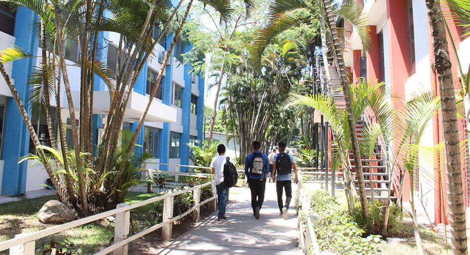
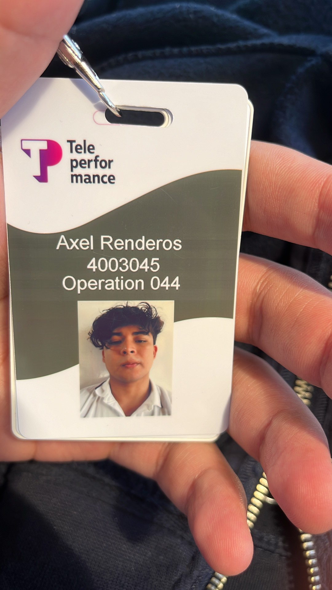
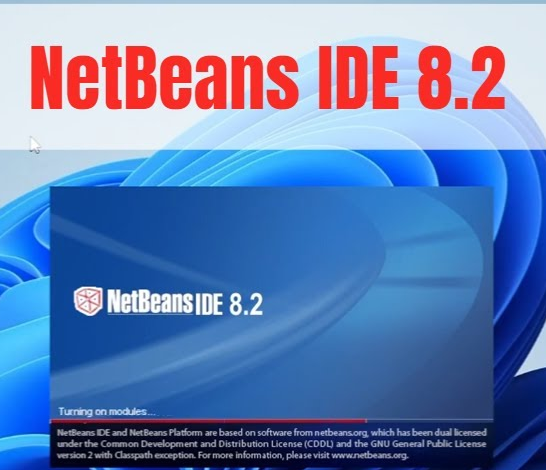

En el año 2020, luego de un riguroso proceso de selección, fui admitido en la Escuela Especializada en Ingeniería - ITCA FEPADE, para la carrera de Ingeniería en Desarrollo de Software. Semanas después de iniciar clases, comenzó la cuarentena, por lo que nos movimos a clases virtuales. Esto significó una gran desmotivación para mí, ya que históricamente, las clases virtuales no sirven para mi aprendizaje. Esto generó que durante la pandemia, me dedicara más a jugar videojuegos. Lo más icónico que recuerdo de las clases en linea, es que NetBeans 8.2 tardaba años para iniciar, y era una interfaz horrible, y en aquel entonces, no aprendí nada.
Esto generó que mi aburrimiento llegara al punto de querer buscar un trabajo, lo que me llevó a iniciar en el mundo de los callcenters. El 16 de noviembre de 2020, incié en Teleperformance, donde trabajé por un año y 2 meses.
Después de esto, tuve una corta estancia en The Office Gurus, pero lo odié tanto que solo logré soportar 3 meses como máximo. Algo que motivó mi renuncia, fue que vi una plublicación en Instagram de Telus International, que tenía los colores de Google. Sin tener mayor información, apliqué. Después de varias entrevistas y de llorarle al reclutador para que me diera información de la cuenta de Google, logré entrar al proceso de selección más riguroso y demandante de mi vida. Luego de varios tests, Me dijeron que podía entrar a un pre-entrenamiento de 5 días, de 7am a 5pm, no pagado, y que aun así no era seguro que me escogieran. Sin pensarlo renuncié a mi lugar de trabajo y me preparé para el entrenamiento que era desde casa (gracias a dios). Posterior a los 5 dias de pre-entrenamiento y 4 examenes técnicos, el día lunes de la siguiente semana, recibí una llamada a las 5:30am, diciendome que me presentara a las 7am a Telus Cascadas. Una vez ahí, tuve una entrevista virtual con 5 Googlers en California, durante la cual se me hiceron preguntas extrañas y 0 técnicas. Luego de eso, fui contratado.
Mi estancia ahí fue corta, pero caotica. Inicié en el equipo de GEN, donde mi tarea era atender chats de soporte técnico para los clientes de Google. Luego de eso, fui promovido al equipo de Developer Extended Support for Google Workspace, donde mi responsabilidad era asistir a clientes con scripts de automatización. Posterior a eso, logré asegurar un periodo de prueba en Telus Digital Solutions. Desafortunadamente, tengo 0 fotos de esta etapa laboral.


